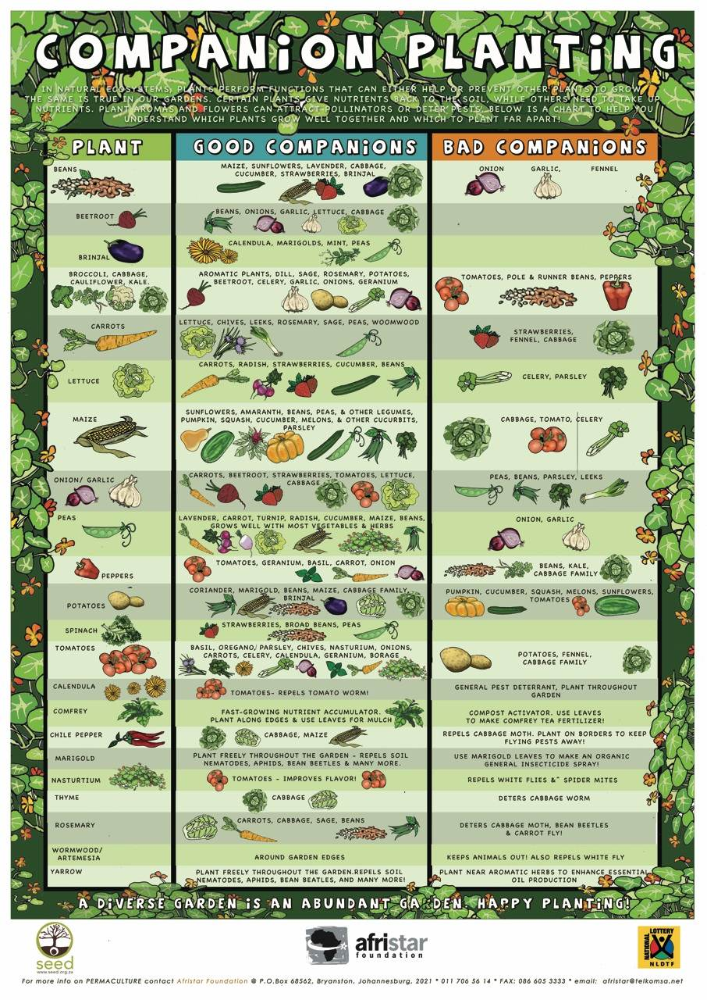

1. Care of the Earth
This principle is all about looking after the planet that keeps us alive. The Earth provides everything we need; air, water, food, and shelter. Since it's the only source of these essentials, it's common sense to take care of it. Everything on Earth, from the soil and plants to rivers and animals, is connected. By keeping ecosystems healthy, we're essentially looking after ourselves. This includes taking care of the soil, which supports all plant life and preserving forests, which clean our air and help regulate the water cycle.

2. Care of People
This principle emphasizes the importance of taking care of each other and creating strong, supportive communities. Humans are social creatures and just like bees or ants, we rely on each other to thrive. It's the idea of “teach a person to fish,” so we all benefit long-term. A key point here is that you can't help others if you're not taking care of yourself first. So, this principle starts with self-care and extends outward, from family to neighbors, then to the broader community and eventually to the world.
3. Fair Share
The Fair Share principle is about understanding that there are only so many resources to go around, so it's important to take only what you need and share the rest. Our modern consumer culture pushes for constant growth and more consumption, but that doesn't work in a world with limited resources. Instead, permaculture encourages us to recognize when we have more than we need and to give back; whether that is sharing food, skills, or time.
1. Observe and Interact
observant and responding to what we see is really important in moving towards a more ethical and sustainable way of life. Be observant of the location; Know what thrives and which animals that use the space and how they interact with the ecosystem. Go with the flow and do not recreate in your own image. Watch all seasons - everything changes. Know the rain cycles and the suns trajectory.
2. Catch and Store Energy
Energy is abundant on our planet. Learning how to catch and store that energy - in plants, with renewable energy infrastructure, or in other ways, is key to living a sustainable way of life. Energy is power, heat, calories, seeds and rain. Preserve as much food as possible.
3. Obtain a Yield
Get rewarede for your work. Obtaining a yield can be as simple as using organic gardening techniques to provide food for our families - but it can also be about obtaining a non-tangible yield: happiness, health, trading, skills and knowledge. Chickens produces eggs and meat, scratches between crops, feeds off food scraps, generates manure and provides happieness.

4. Apply Self-Regulation and Feedback
Understanding where we've succeeded and where we've gone wrong is vitally important to creating real and lasting change. Do not abuse a system, learn how far to push it without going too far. Listen to the feedback that is given to us. Also applies to overwork - happieness is important too.

5. Use and Value Renewables
By using the power of the sun, the wind, or the water, we can power our homes, grow our food, and regenerate our environments. Use animals instead of machines and let nature run its course.
6. Produce No Waste
Moving towards a zero waste lifestyle means looking at all the trash we chuck out and trying to eliminate it. We can do this by reducing the amount we buy, by buying wisely, by reusing or recycling where possible, by composting, and by working with ethical companies who look at waste throughout the entire life-cycle of their products.

7. Design from Patterns to Details
Nature works in patterns. Used for space optimization and used correctly, it can enchance the plants. Rows are bad and inefficient - nature has diversity, moisture-retention, supportive plants and animal ecosystems. Think about sun and shade control and make incorborate workstations and places to be happy.
8. Integrate Don't Segregate
Plants work well in diverse systems - the same is true of people too. Plant polycultures (guilds of plants which work together). We can also apply it to communities, groups or organisations. Also: you do not have a surplus of snails - you have a deficit of ducks (or geese). Remember to integrate into the community by trading, selling, building or teaching.
9. Use Small, Slow Solutions
small, incremental changes is the best way to move towards sustainable change. Fast solutions are rarely the best and carries more risk. For example - don't start a farm, try a small windowsill garden. Don't overhaul your entire shopping philosophy - change things one ethical purchase at a time. Use materials sources local and cheap/free to build, don't rush it.

10. Use and Value Diversity
Just as ecosystems work best when filled with a greater variety of different plants and animals, so human society functions best when an variety of different people are represented. In your garden, home and your life in general, it's a good idea to promote and value diversity in all its forms. Don't put all your eggs in one basket. Diversity lowers all kinds of risk. Plant flowers, herbs and medicinal perennials around veggies and fruit trees, and see the pollinators and insect predators flourish.
11. Use Edges and Value the Marginal
Sustainability is about making use of all the resources that we have at our disposal. Whether we're talking about land use, work places, homes or society. This might be as simple as using a neglected corner of your outside space to grow more food, or something more abstract, like thinking outside the box. The proverb “don't think you are on the right track just because its a well-beaten path” reminds us that the most popular is not necessarily the best approach.
12. Creatively Use and Respond to Change
It's important to remember that permaculture isn't just about now, but about the future. We design for change, understanding that things will alter over time. The changing seasons, changing attitudes, our changing climate. Interaction between the young and the elderly provides a way in which knowledge and experience can be passed on to the next generation.
secret to healthy soil is to mimic nature and create a living ecosystem of microorganisms, plants, and animals that keep the soil healthy. The soil stores carbon using biomass and fungi growth which is released when the soil is tilled.
1. Work with Nature
Different environments like forests and grasslands have different soil types. Forest soils are rich in
fungi,
while grasslands have a balance of fungi and bacteria. Choose the right approach based on what type of
system
you're trying to create.
2. Avoid Heavy Tilling
Tilling can harm the soil by breaking its structure and killing helpful organisms. Instead, let worms and
other
creatures naturally aerate and fertilize the soil.
3. Add Organic Matter
Organic material is key to building healthy soil. Use compost, mulch, and crop leftovers to improve soil in
gardens. In grasslands and food forests, use cover crops and organic mulch for long-term health.
4. Use Compost and Mulch
Compost provides nutrients and introduces good microbes. Mulch keeps the soil protected, retains moisture,
and
slowly breaks down to feed the soil.
5. Plant Cover Crops
Cover crops keep the soil covered, prevent erosion, and add nutrients. Legume plants like clover help fix
nitrogen in the soil, which is essential for plant growth.
In forest-like systems, promote fungi by using woody materials and adding fungi to the soil. Fungi help plant roots absorb nutrients and fight diseases. Mycorrhiza is a special relationship between fungi and plant roots that benefits both. The fungi attach to the plant roots and extend far into the soil, helping the plant absorb more water and nutrients, especially phosphorus. In return, the plant provides the fungi with sugars and nutrients it produces through photosynthesis. This partnership is very important because it improves the plant's ability to grow in poor soils, helps prevent diseases, and even increases resistance to drought. Mycorrhizae also create a network that connects plants, allowing them to share nutrients and communicate through chemical signals. Mycorrhiza can be bought and added to a soil system.
7. Include Animals
Animals like grazing livestock help the soil by trampling it and adding natural fertilizer. Rotating animals through different areas improves soil structure over time.
Zone 0:
This is the heart of the permaculture design, typically where the home or main living space is located. It's the hub of daily activities, where energy and water use are most intensive.Zone 1:
This area is immediately surrounding the home. It's frequently visited and is the site of activities that require regular attention, like herb gardens, salad crops, or small livestock like chickens.Zone 2:
Zone 2 encompasses the space for more extensive orchards, larger fruiting shrubs, and other plants or animals that require moderate levels of attention.Zone 3:
This is the primary agricultural zone, where main crops are grown, both for consumption and sale. Large-scale plantings, orchards, and larger livestock reside here.Zone 4:
Semi-managed, this zone often comprises of foraging areas, managed woodlands for timber and firewood, and some grazing for livestock. It's a bridge between cultivated land and wild ecosystems.Zone 5:
The wilderness. This zone is left mostly untouched to foster biodiversity and provide a natural habitat for wildlife. It acts as a reservoir of wild plants and animals and serves as a reminder of the natural ecosystems that permaculture seeks to emulate.
Sectors
Sector planning is concerned with energies external to our site, the elements and forces of Nature, that
come from outside our system, and pass through it.
These energies include
hot summer winds,
cold winter winds,
winter and summer sun angles,
salty or damaging winds,
water flow and flood prone areas,
unwanted views
and fire danger areas.
Since these wild energies come into our system from outside, we can strategically place elements in our
design to manage or take advantage of these incoming energies. By placing plants, trees or structures in the
appropriate areas, we can block the incoming energy, channel the incoming energy for our intended use and
open the area to allow the incoming energy.
Water is the foundation of any successful permaculture system. Effective water management the
top priority in permaculture. Whether through harvesting rainwater, storing it in the soil, or collecting
surface water, the goal is to maximize water availability on the farm.
There are two primary strategies for water conservation: storing water in the soil and diverting surface
water to ponds, dams, or tanks. The first step is to "slow, spread, and sink" rainwater into the soil as
much as possible. This helps prevent runoff and allows the water to infiltrate deeply, increasing the
water-holding capacity of the soil. Once the soil has absorbed as much water as it can, any runoff can be
stored on the surface for later use.
Ben Falk, in Resilient Farm and Homestead, outlines three key objectives: (1) capture as much water as
possible, (2) store that water for dry periods, and (3) distribute it across the site when needed. Your
approach will depend on the specific conditions of your farm, including climate, terrain, soil type, and
overall water needs.
To start, you need to understand your water sources. The first and most important question is: how much
precipitation does your farm receive annually? You also need to know how that rainfall is distributed
throughout the year; whether it comes in heavy downpours or is spread evenly. This will inform how you
design
your water systems.
In addition to rain, streams and underground water can also be valuable resources. Streams on or near your
property may provide a reliable water source, but you'll need to determine whether they are perennial or
seasonal. If you're considering tapping into groundwater, you may need to drill a well.
Once you've assessed your water sources, the next step is to analyze your watershed. A watershed is the area
of land that drains water to a common point, like a stream or river. Your farm is part of a larger
watershed, and understanding its topography will help you predict how water moves across your land. Using
topographic maps, you can identify ridges, valleys, and other features that affect water flow. This will
allow you to calculate your watershed area and, ultimately, your total rainfall volume.
Storing water in the soil is one of the most cost-effective and efficient methods. The goal is to increase
the soil's organic matter, which acts like a sponge, absorbing and holding water. Even a small increase in
organic matter can significantly reduce the need for irrigation. Techniques like keyline plowing and swales
can further enhance water infiltration.
Once you've maximized water storage in the soil, surface storage in ponds or tanks becomes the next focus. If your water needs are relatively small or you need a potable water source, a tank might be the best option. For larger volumes of water, ponds or dams are more effective. Ponds can serve multiple purposes, from irrigation to aquaculture, while also providing habitat for wildlife.
After setting up your water storage systems, you'll need to think about how to harvest water. Diversion drains and swales can be used to channel water into ponds or tanks. Roads and other impervious surfaces can also serve as efficient water-harvesting systems, collecting runoff that can be redirected into your storage.
Irrigation is another important consideration. Gravity-fed systems, where water is released from a pond or tank through pipes, can be used to irrigate fields, orchards, or gardens. This method is especially effective if the water source is positioned at a high point on your property, allowing water to flow naturally downhill.
Hügelbed!
A type of raised bed made using wood, handy if logs are in surplus.
All and only legumes stores nitrogen!
for real for real.
Dead mans finger (legume bush) can act as a local center as it grows tall and creates a large root network which will store nitrogen in the surrounding earth.
Kiss the ground
A movie (also on netflix) called Kiss The Ground about soil and the destruction of the american top soil.
Companion plants
